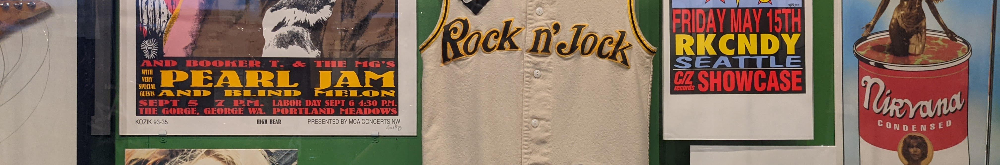
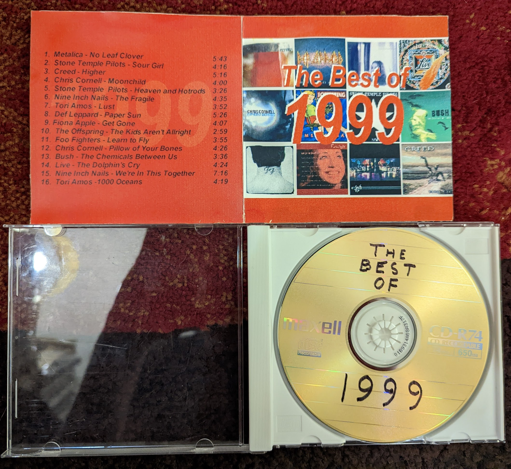
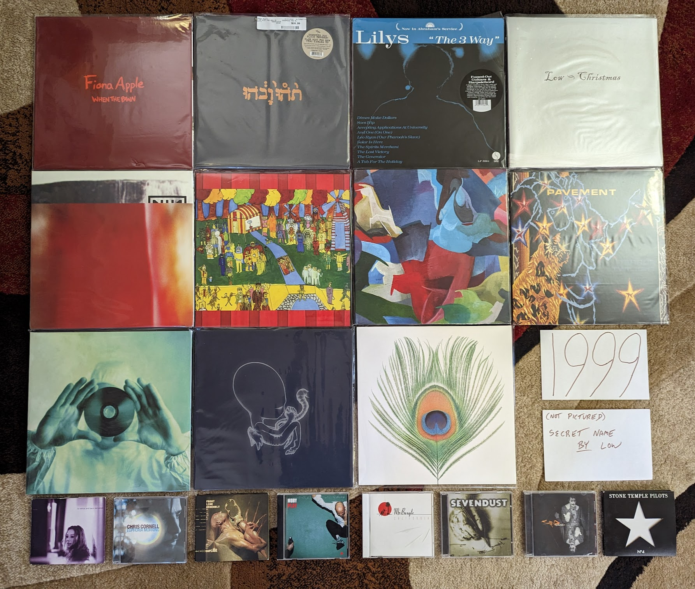

1990s¶
{kind=link}
1990s Overview¶
TBD
2010s Stats/Favorites¶
Section started: 2 January 2023
Section complete: TBD
Latest update: 2 January 2023
Total Albums: TBD
Top Artists:
TBD
Favorite album:
TBD
Favorite Song:
TBD
1999¶
I guess if this project had a very beginning it would be this year. Sometime in early 2000 I would assemble a mix CD of what I considered to be the best songs of the prior year. I had recently bought my first CD burner, and one application I was very excited about was the ability to create compilations that I could listen to on the Sony Discman that was hooked into a casette adapter in my car. It was a highly manual process that required me to insert and remove twelve different albums as each track was added to the CD-R. So what was on this disc, and how does it hold up 23 years later?
{kind=link}
It could be way worse! Nine of the sixteen tracks come off of five albums that are still among my favorites from the year. A further four songs make the list of my favorite tracks off of records that are not on my album list. That means that only three tracks have dropped off my radar completely, and they are a study in how my taste has changed over time.
“No Leaf Clover” by Metallica - I don’t know that any other band has aged less gracefully than these guys. What used to seem so edgy and hard, now comes across as tacky and commercial. At the time I liked this track enough for it to kick off the whole comp, but today it feels dated and boring.
“Higher” by Creed - This isn’t awful by any means, and it probably still ranks as one of their best songs. In general I have no taste for the post grunge sound anymore. There are a few selections on the list below that are adjacent to this kind of thing, but I just can’t take all those distorted droning guitars anymore.
“The Chemicals Between Us” by Bush - Listening to this song again, it is a bit more interesting than I remember. The structure is fairly ambitious for a late 90s alt rock song, and it seems to be alluding to break beats in its rhythms. That said, this band suffers from a bad case of crappy 90s guy vocalist.
I didn’t even own all the albums and had to borrow two of them from a friend to complete the playlist. This revealed to me another use of the CD burner, piracy. For the next several years I would use this means to expand my collection beyond what my current wealth could achieve. It was the age of music piracy after-all. I had been experimenting with MP3 downloads for the last year or so when high-speed internet all of a sudden made them way more practical. I remember sitting in the computer lab of Penn State Berks campus filling up a 100 MB zip disk a couple dozen tracks from Napster. Looking back, I wasn’t really interested in pirating music, I just wanted a sample top make informed decisions. We were using Napster like we use Spotify today. Regardless, by 2003 legal music downloads were finally a thing and I went completely legit. It isn’t true of everyone, but I think the download era made me into the music consumer I am today. I own 4000+ albums in different formats after-all.
Why was 1999 the first year when I decided to make a summing up of my favorites? This was the dawn of the internet age, and there were a couple hand-crafted websites out there already doing the same thing that surely were an inspiration. For me though, it was something deeper. In late 1998 I had moved out of my parents house. My summer internship was providing me a small amount of discretionary income, and my discretion was to buy music. Specifically it was my discretion to buy the music that interested me, all the music that interested me for the first time in my life. Growing up in a conservative religious cult, large swaths of pop music were considered evil, the work of “the Devil”. I was mentally out of that mindset for some years, but the physical separation gave me the freedom to explore my genuine self. Nowhere was this more tangibly evident than the music I was consuming. Is this why pop music is so important to me? Because in many ways it was the first medium through which I expressed and explored my genuine self? I’m glad that so many of my favorites from that time are still something I enjoy today. They have however been joined by quite a few others.
{kind=link}
To Venus and Back by Tori Amos - Her last album of the 90s and the end of a period of massive artistic growth. It’s not that Tori has stopped innovating after this one, but the rate of growing ambition slowed down a bit. The originals on disc 1 take the electronic infused sounds from Choirgirl to their logical and fulfilling conclusion. Some of the most exciting deep tracks that still show up at live shows are here, like “Josephine”, “Suede”, and especially “Lust”. The closing track “1000 Oceans” seems to point towards the more straight ahead singer-songwriter material that would feature on the next few records. Disc 2 is a stunning capture of Tori at her live best. At the time it felt a little unnecessary, but today I’m glad we have this record of the earliest days of full band Tori Amos performance practice. [Memory: This is the first of three records on this list that came out the same exact day: September 21, 1999. I’ll never forget heading to the Best Buy by my college with a list of records to pick up. I was particularly interested in this one as I had been buying the CD singles that had been released in advance of this record. Each one seemed to be better than the one that came before. I remember leaving the Wyomissing Boarders with a CD single of “1000 Oceans” and having it unwrapped and ready to go in the discman by the time I got to my car. The album did not disappoint. Soon after Tori would go on her dual headlining tour with Alanis. I remember discussing with one of my work colleagues a plan to somehow split the ticket to the Philly show, since we each only cared about one of the artists.]
When the Pawn… by Fiona Apple - Still my favorite record by her. The eccentricity that would define her later work is starting to form, but has yet to become grating. Certainly not a commercial record by any means, and it pretty much destroyed her career for almost two decades. [Memory: This is one of those records that I assumed that I would never own on vinyl. Thanks to the success of Fetch the Bolt Cutters we got a really nice repress on Vinyl Me Please in 2021. It cracks me up that they left the pretentiously long title off the cover this time. I have to assume she is mildly embarrassed about that as an adult.]
Euphoria Morning by Chris Cornell - A bit of a lost classic. After the horrors of Audioslave and his later solo career it can be easy to forget about this nice little 60s rock inspired record. In the late 90s it seemed like every aging alt-rocker was leaning heavily on the psych-rock of their youth. This was a nice showcase of his voice in a set of more low key material. If only we had gotten more of this. [Memory: The second record on this list from 21 September 1999. I was a fan of Soundgarden and enjoyed his contribution to the Great Expectations Soundtrack and was very interested in what his solo career would hold. I was very pleased with this disc and the solo show I caught later in 1999 at the Tower Theater. After that, I can’t say I enjoyed his work.]
Implode by Front Line Assembly - The beginning of their second phase. Elements of techno and other modern electronic music are really starting to creep in. This is massively danceable. The world music sounds of their other act Delerium are also showing up more often. As an adult this is probably my favorite of theirs. [Memory: I bought this on a bit of a whim during a period of high interest in the Delerium project. In many ways, this was my point of entry to the goth sounds.]
Slow Riot for Zero Kanada by Godspeed You! Black Emperor - Very much in the sound of their debut LP, this EP is the perfect fit for when you want just a taste of the Godspeed. Yeah it all sounds very much the same in retrospect, but I like that sound. [Memory: IN 2021, when I was chasing down my favorites from the past to make my vinyl collection as complete as I could, I waffled on how much I really needed this. It ended up being the last record I bought during that project.]
The 3 Way by Lilys - An interesting band that did a bunch of different things, and released a ton of albums very quickly. I sought them all out, but my favorite will always be this Kinks homage. The way that it fuses the sounds from those late 60s records with the spirit of 90s indie is a magic combination. [Memory: This was fairly obscure when I became aware of it in the mid-2000s. I remember buying a used copy off of Amazon that didn’t even have the front cover booklet. I now own an amazing 2019 vinyl pressing that I am amazed got made.]
Christmas by Low - A remarkable holiday album that feels like an incredibly natural thing for this band to create. It is warm and sad, and complicated. It really captures the feeling of the holiday season for me and a lot of other folks who consider it their seasonal favorite. [Memory: Around 2019 I started to compile a playlist of holiday music that captured the way the season felt to me. I discovered this record when researching potential candidates to add.]
Secret Name by Low - I don’t know that any other album lives up to the genre of “slowcore” quite like this one. Beautiful music that moves along a glacial pace. They hadn’t yet mastered their vocal harmonies (that would come on the next one) but this has a delightful smallness they would never have again. [Memory: I was listening to this a lot when I moved into the first apartment I lived in alone. Everything was so quiet, and it felt a bit lonely. This music really fit with that.]
Play by Moby - This guy was everywhere in the late 90s. This guy “is” the late 90s. He might not be in fashion anymore, and actually is a bit hated today, but this is still some really enjoyable pop-electronica. In fact, with its break-beats, world music sounds, and epic production values, this might sound more like the late 90s than anything else out there. [Memory: In the summer of 1999 I took a trip to Niagara Falls with my brother, sister, and a high school friend. As we waiting in traffic to get back to the hotel after a fireworks show, I heard two songs I didn’t know on Edge102. They struck me so much that I would start an email exchange with the station to find out what they were. I would only have to wait a matter of days to find one of them “Porcelain” from this record, when one of my coworkers brought it in and was listening to it.]
California by Mr. Bungle - The last a best record from these guys. Their throw everything at the wall approach didn’t generally create cohesive albums that were enjoyable from beginning to end, but this one is. Heavy on the doo-wap and surf rock genres, it also throws in bits of metal, noise and rockabilly. The high points are the eclectic opener “Sweet Charity” and the sweet pop of “Retrovertigo”. [Memory: Another record that makes me think of the apartment I lived in by myself around 2005-07. This was my peak era for listening to things that were highly rated on RateYourMusic.com. I think this was one of the last CDs I ever bough from the Columbia House music club.]
The Fragile by Nine Inch Nails - It is wild to think how big of a production a hard rock record could be in the late 90s. We still have massive overproduced albums, but they are by mainstream pop artists now, not outsider electro-industrial outfits. This is one of those double albums that delivers on its promise. You get the sense that Trent is no longer as lost or angry as he is posturing to be, but man this is compelling stuff. The song “Please” is an all time classic blistering NIN track, but once again many of the best moments are quieter like the title track, “I’m Looking Forward to Joining You, Finally”, and especially “The Great Below”. His finest work, and a top 5 all time record for me. [Memory: This is the third of the records to come out on 21 September 1999 to make my list. I actually didn’t buy this one on the day of release, as I only had so much money to throw around. One of my good friends did buy it, and put it on at a house party that weekend. I can remember clearly listening to it on a boom box on the kitchen table and being blown away. I ran out and got my own copy.]
The Gay Parade by Of Montreal - I really miss the early incarnation of Kevin Barnes making weird little psych pop gems. This is the peak of that sound, and a subtly profound mediation on the nature of happiness. The Songs that close out the albums are especially profound. “My Friend Will Be Me” is about finding the inner strength to fight back the darkness of loneliness. “My Favorite Boxer” a set piece exploring the dangers of finding fulfillment and meaning in a “relationship” with a media figure. The cynical “Advice From a Divorced Gentleman to His Bachelor Friend Considering Marriage” calls out the draining trap of negative thinking. The stunningly beautiful “A Man’s Life Flashing Before His Eyes While He and His Wife Drive Off a Cliff into the Ocean” shows how we often only realize how good we have it when we are faced with it all being taken away. Then we have “Nickee Coco and the Invisible Tree” who’s message is complex and completely unclear. A young girl who becomes separated from her community seems to find a place of peace and calm. Should we feel good when Nickee is found, or did she really belong in that tree? [Memory: This was the first album I ever spent a little more for a used copy of. For several months I watched eBay and eventually put down $35 plus shipping for my own copy of the 1999 pressing. It is funny to think about that as a lot of money now, since that is pretty much the going rate for new albums. I remember a group of us were listening to records on my old crappy Sony turntable in the basement game room of my apartment in those days, and I dropped the disc on the floor! It survived.]
Black Foliage Animation Music: Volume I by The Olivia Tremor Control - My favorite of the albums by the core Elephant6 bands. A fascinating, dark sound collage, this is music of a particular mood. It makes very little sense in daylight, or overly happy times. They only released two records, but they were one of the greatest bands of the 90s. [Memory: I listened to this a lot during the period where I was moving to Rochester around 2008/09. I remember jamming it in a mostly empty office while I worked late into the night. It was perfect for that environment. In 2010 the E6 bands played a holiday show in Buffalo, and I enjoyed getting to hear several of my favorites off of this, including the amazing “I Have Been Floated”.]
Terror Twilight by Pavement - For their last statement, they did something a bit more refined, but not that refined. Given the change in direction it isn’t surprising this was the end. A strong collection of songs from one of the defining groups of the decade, and a blueprint that many of the 2000s indie bands would mine for content. [Memory: I actually didn’t know very much about this one when Matador released the vinyl reissues in 2010. I bought it to complete the set, and I’m glad I did.]
Stupid Dream by Porcupine Tree - The definitive statement of their mid period, alt rock days. Some really interesting long-form rock songs with light prog elements. The focus here was definitely the song-writing, and we got some standouts, especially “Piano Lessons” and “Stop Swimming”. Mostly somber and reflective in tone, this isn’t happy music, but it isn’t depressing. [Memory: They were still and unknown band in the states when this came out, and I only knew about it because of one of my friends from work who got it from a friend back in his native Poland. I burned a CD-R off of him, and that was my copy until I got the first official US release in the mid-aughts.]
Home by Sevendust - I listened to a lot of this kind of NuMetal thing back in the day, but most of it hasn’t held up. The reason I keep coming back to this is the vocals are a step above anything else in the genre. In addition to the usual growling we have some really pretty Deftones-esque vocal harmonies. This shows that a much maligned genre could be better. [Memory: Every time I see that this album is on my list of favorites I question that and think that it can’t be true. Then I listen to it, and realize that yeah, I do actually like it quite a bit.]
Agaetis Byrjun by Sigur Ros - Ethereal beauty is the cliche way to describe this one, but it is accurate. They feel like they have spent the rest of their career trying to recapture this sound, and as a result have pretty much kept duplicating this record. A dreamy atmospheric record for a winters day. [Memory: I discovered this during a CD-R swap at my summer job in 2002. I didn’t listen to it until I was back at my college apartment for the next year, and I can still picture sitting in my basement room, listening on my PC completely blown away by what I was hearing.]
Dysfunction by Staind - Wow, what a time capsule of what music sounded like back then. The rumbling low tunings, the growling. Oh yeah, this is dated, and I have no idea why I am still listening to it almost 25 year later, but I am. [Memory: I don’t believe in the concept of guilty pleasures, but this one pushes that boundary. I thought long and hard about whether I could put this on the list, but here we are.]
No. 4 by Stone Temple Pilots - A remarkable record that includes some of the better grunge tunes these guys ever made (especially “Down”) while continuing their development into more subtle territory with pop songs like “Sour Girl” and “I Got You”. I don’t think these guys were appreciated in their time, and this album really shows off their range. [Memory: This album really makes me think of the Penn State Berks Campus that I attended from 1998-2000. I was listening to this a lot on my rides into school.]
Apple Venus Volume 1 by XTC - A truly exceptional record that feels like the culmination of the 20+ year journey by these guys. A collection of ornate pop gems, its not surprising they decided to stop here. This might the best this kind of chamber pop can be done. Andy Partridge was writing 10 great songs before breakfast in those days, and even Colin Moulding came up with his ultimate statement in the stunner “Frivolous Tonight”. [Memory: When I started to really get into these guys around 2005, this album had already almost reached mythical status. Shortly thereafter I was able to actually buy a copy when the Apple Box set was released.]